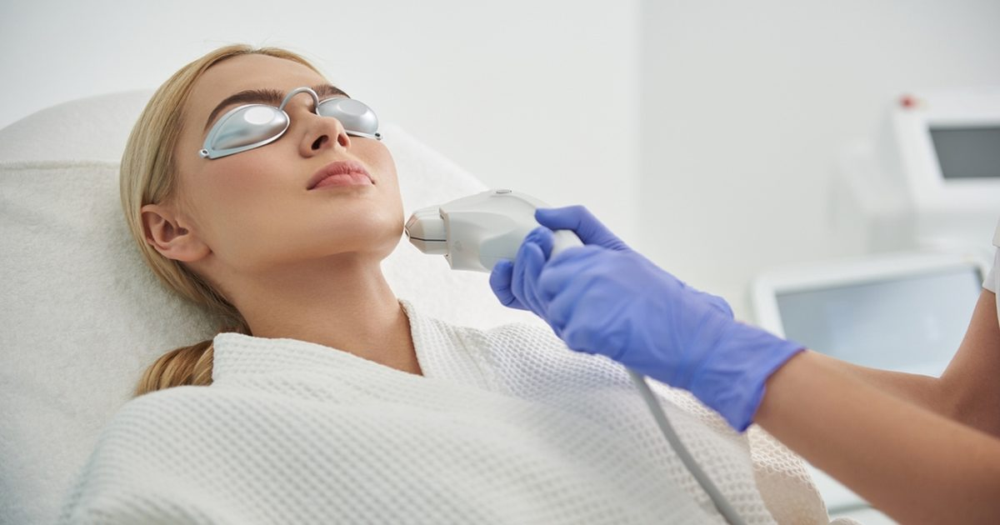

Silab представляет новые данные об эффективности Cicactyl в постлазерном уходе за кожей
Компания Silab, разработчик натуральных косметических активных ингредиентов со штаб-квартирой во Франции, опубликовала новые данные об эффективности Cicactyl, его активного ингредиента, предназначенного для поддержки восстановления кожи после фракционных лазерных процедур.
Силаб провел новые исследования эффективности Cicactyl, природного активного ингредиента, полученного из камеди рожкового дерева (Ceratonia siliqua).
Цикактил был разработан для ускорения и улучшения заживления кожи.
Он нацелен на четыре ключевых процесса, связанных с